Return goods to a vendor from any Purchase Order or receipt in a single popup. The wizard validates the return transfer and drafts the vendor credit note in one step, crediting only what was actually billed.
Returning purchased goods in standard Odoo works, but it is slow and easy to get wrong when an order has many lines, several receipts or partial bills.
All screenshots are from a live Odoo 17 database with fictional demo data.
Shown on confirmed and locked orders to users in the Process Returns group. The Returns smart button counts every return made for the order.
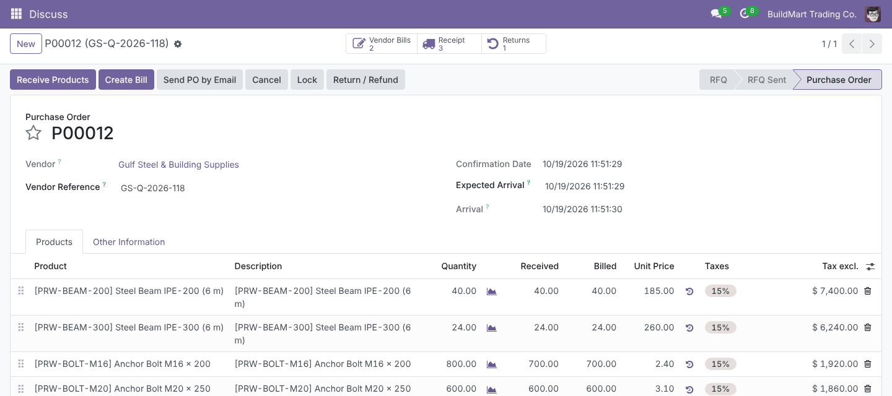
Each line shows Ordered, Received, Billed and Returnable quantities and a badge: Billed Partially Billed Not Billed Not Received.
Choose Keep or Return per line and type the exact quantity. Credit Amount previews what goes on the credit note before anything is created.
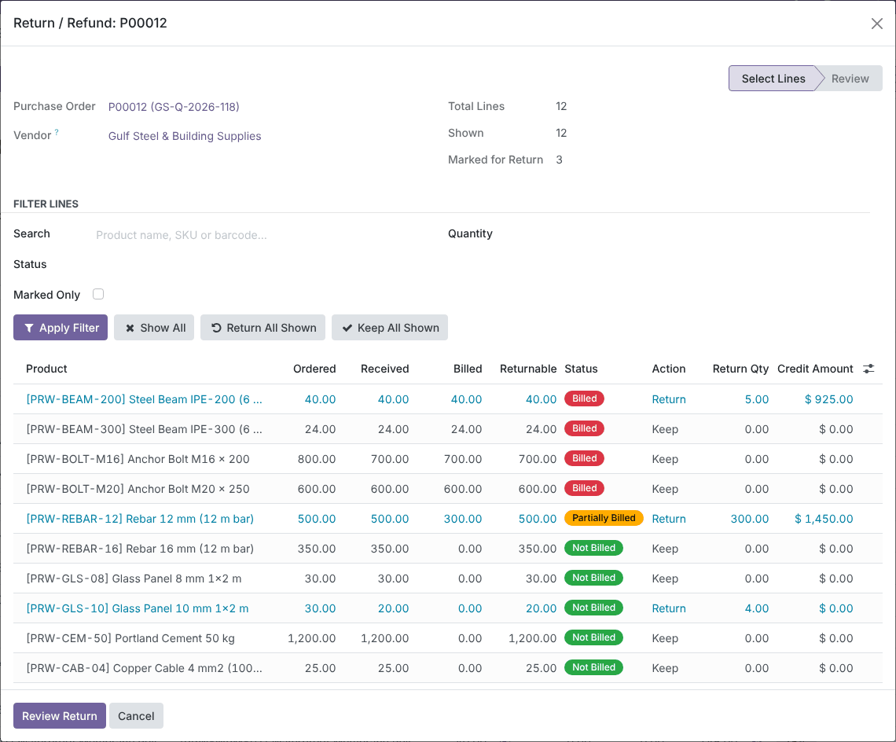
Filter by product name, SKU or barcode, by a quantity range on Ordered, Received, Returnable or Billed, by status, or show only the lines marked for return. Filtering runs on the server, so only matching rows load and edits on hidden rows are kept. Return All Shown and Keep All Shown act on the filtered rows only.
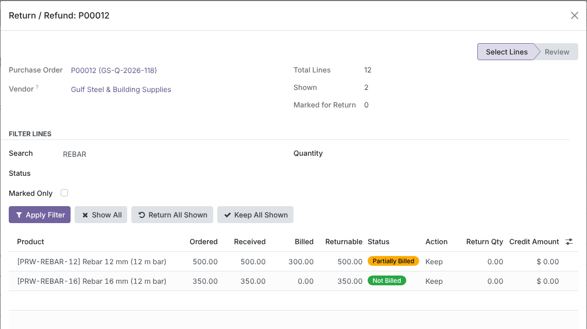
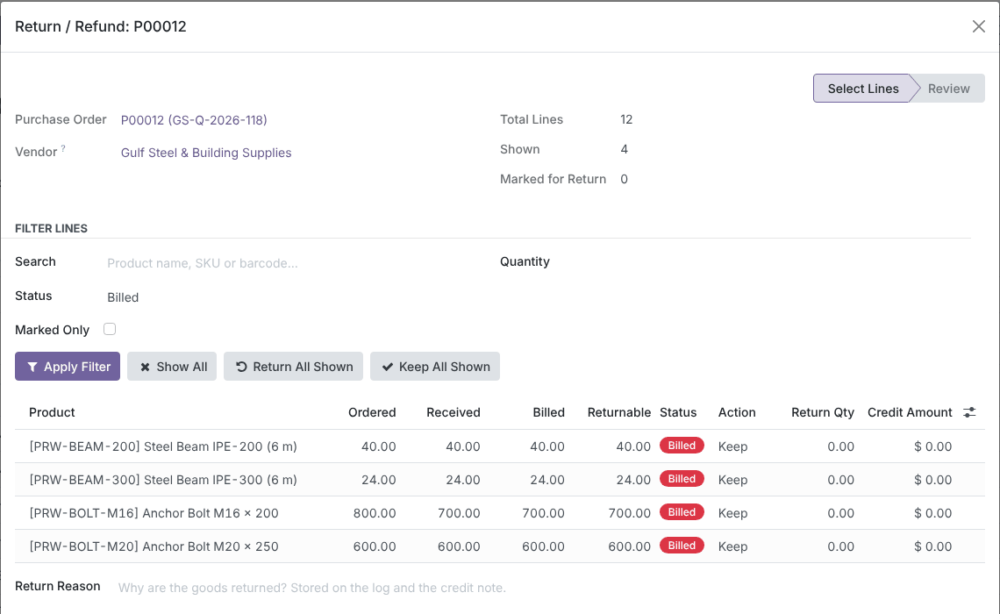
A quantity above the limit is capped while you type, with a message that explains why. Server-side constraints block negative values, Keep/Return mismatches and anything above ordered, received or still-returnable (pending returns are deducted). On confirm, every figure is re-read from the database under a row lock, so two users can't return the same goods.
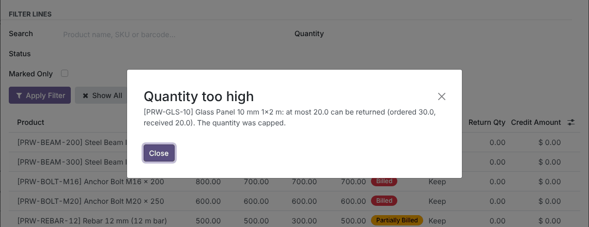
The Review step shows the documents that will be created, the total quantity, the untaxed credit amount and only the lines being returned. Go Back to change the selection, or Cancel and nothing is created.
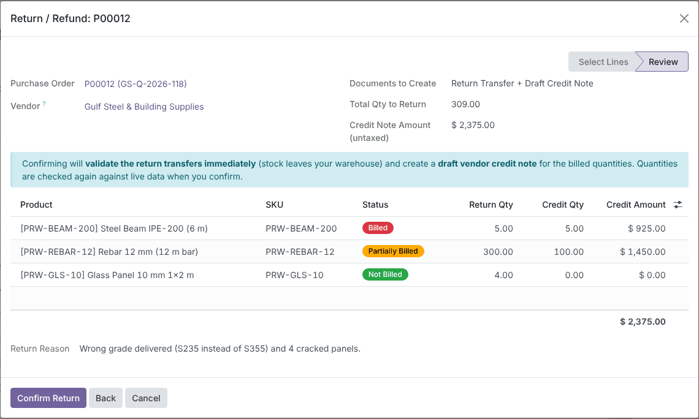
On Confirm Return the popup closes and the Purchase Order reloads with updated Received and Billed quantities. A notification links to the PRET log, each return transfer and the credit note. If any step fails, everything is rolled back.
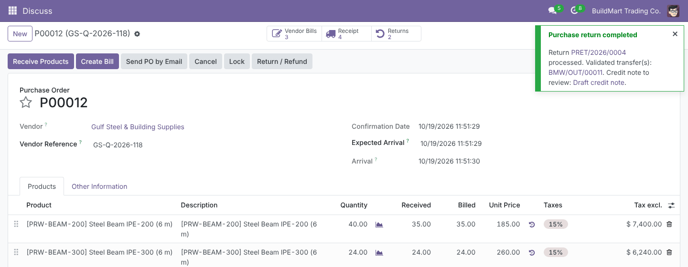
The return is created with Odoo's standard return mechanism against the original receipt, so valuation and traceability follow core rules. It is validated straight away. The draft Vendor Credit Note holds one line per credited product at the average billed price with the bill's taxes. Each line is linked to its PO line, and the reference and reason point back to the PRET log.
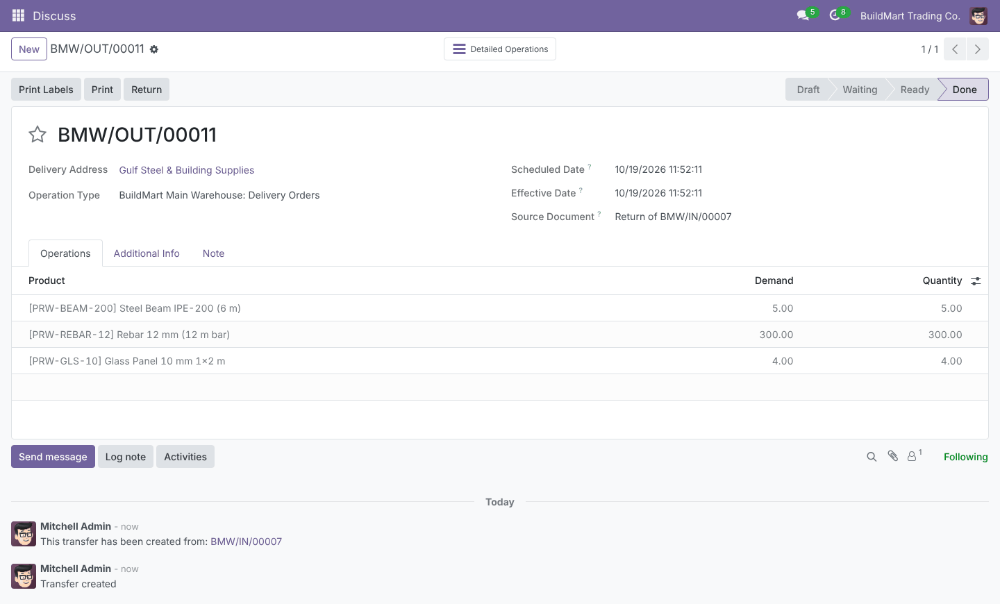
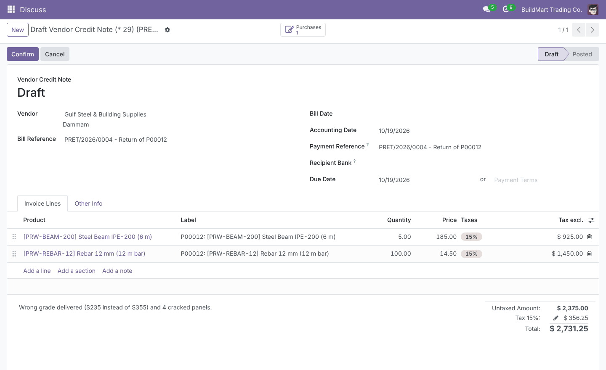
Every confirmed return writes a PRET/YYYY/NNNN record that nobody can edit or delete. It holds the processing user and date, the routing, the credit note and its live status, the amount credited, the returned lines and the reason. Find it under Purchase › Orders › Purchase Returns, with filters and grouping by vendor, routing or month.
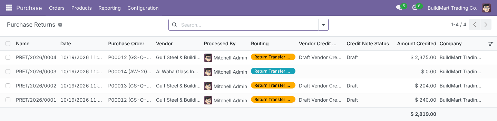
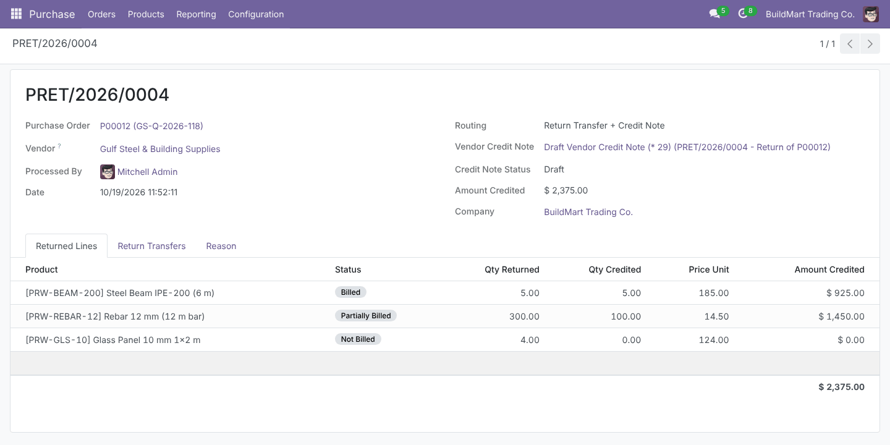
The same button sits next to Odoo's Return on every validated PO receipt. From a receipt, the wizard lists only the PO lines received in it, adds an In This Receipt column, and always returns against that receipt. Billing and credit stay at PO-line level, so the credit is still exact. A PO Returns smart button and chatter messages appear on the receipt.
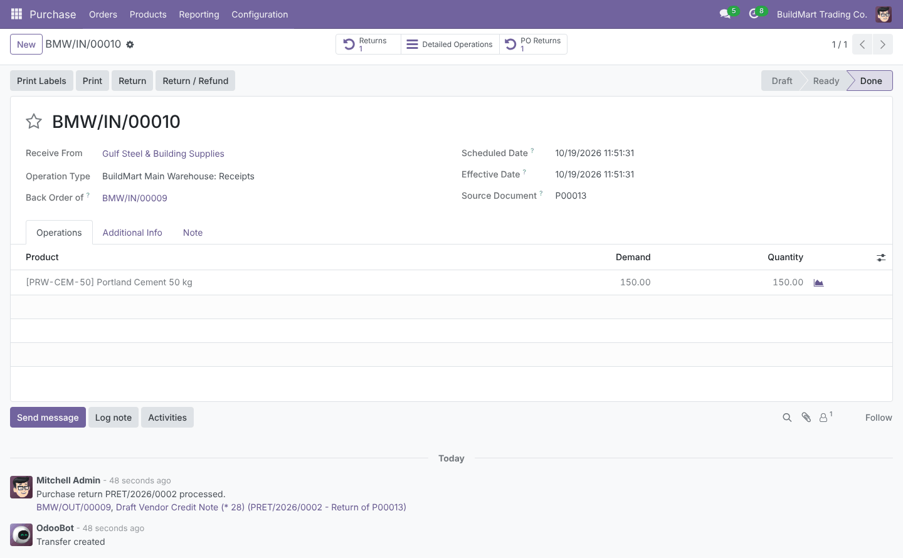
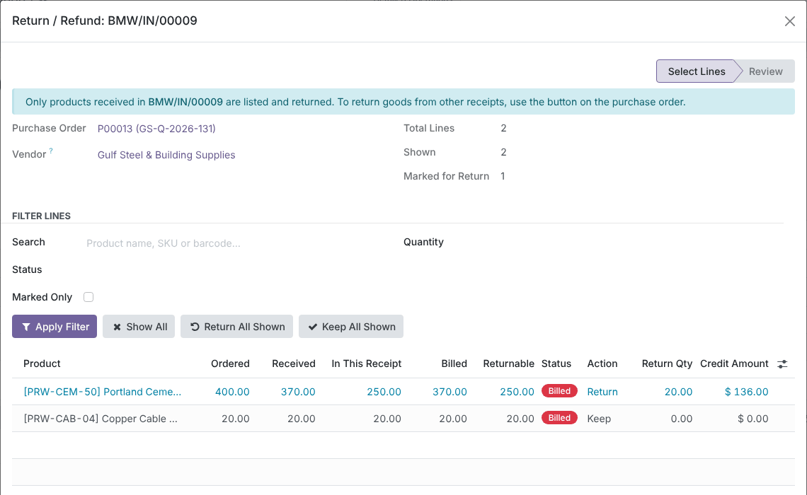
Each line is routed by what was received and billed for it. Only the part of a return that would leave the vendor over-billed is credited.
| Line status | Condition | Created on confirm |
|---|---|---|
| Not Billed | Received > 0, nothing billed | Validated return transfer |
| Billed | Billed ≥ received | Validated return transfer + draft credit note line |
| Partially Billed | 0 < billed < received | Return transfer for the full quantity; credit only for the billed part |
| Not Received | Nothing received | Nothing (line is read-only) |
| Odoo version | 17.0, Community and Enterprise |
| Depends on | purchase_stock, account (no Enterprise-only modules) |
| Security group | Purchase: Process Returns & Vendor Credits (Purchase Administrators get it automatically) |
| Menu | Purchase › Orders › Purchase Returns |
| Automated tests | 26 TransactionCase tests: constraints, routing, mixed partial/full returns, multiple receipts, concurrency, receipt scope, access rights |
| Prerequisites | 1-step receipts; vendor bills created from the PO |
Questions, a demo, or changes for your own process? Get in touch.
✉ ibrahim.yahiah@gmail.com LinkedIn: Ibrahim YahiaAuthor: Ibrahim Yahia · License: LGPL-3